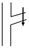
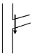
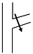
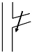

산림기능사 (2016-07-10 기출문제)
1과목: 조림 및 육림기술
1. 인공조림과 비교한 천연갱신의 특징이 아닌 것은?
- 생산된 목재가 균일하다.
- 조림실패의 위험이 적다.
- 숲 조성에 시간이 걸린다.
- 생태계 구성원 보호에 유리하다.
(정답률: 86%)

2. 예비벌을 실시하는 주요 목적으로 거리가 먼 것은?
- 벌채목의 반출 용이
- 잔존목의 결실 촉진
- 부식질의 분해 촉진
- 어린나무 발생의 적합한 환경 조성
(정답률: 66%)
3. 소나무의 용기묘 생산에 대한 설명으로 옳지 않은 것은?
- 시비는 관수와 함께 실시한다.
- 겨울에는 생장을 하지 않으므로 관수하지 않는다.
- 육묘용 비료는 하이포넥스(Hyponex)나 BS그린을 사용한다.
- 피트모스, 펄라이트, 질석을 1 : 1 : 1의 비율로 상토를 제조한다.
(정답률: 79%)
4. 묘포지 선정 요건으로 거리가 먼 것은?
- 교통이 편리한 곳
- 양토나 사질양토로 관배수가 용이한 곳
- 1 ~ 5°정도의 경사지로 국부적 기상피해가 없는 곳
- 토지의 물리적 성질보다 화학적 성질이 중요하므로 매우 비옥한 곳
(정답률: 83%)
5. 구과가 성숙한 후에 10년 이상이나 모수에 부착되어 있어 종자의 발아력이 상실되지 않고 산불이 나면 인편이 열리는 수종은?
- 편백
- 소나무
- 잣나무
- 방크스소나무
(정답률: 75%)
6. 개화한 다음 해에 결실하는 수종으로만 짝지어 진 것은?
- 소나무, 자작나무
- 전나무, 아까시나무
- 오리나무, 버드나무
- 삼나무, 가문비나무
(정답률: 61%)
7. 침엽수 가지치기 방법으로서 적당한 것은?




(정답률: 77%)
8. 수종별 무기양료의 요구도가 적은 것에서 큰 순서로 나열된 것은?
- 백합나무＜자작나무＜소나무
- 자작나무＜백합나무＜소나무
- 소나무＜자작나무＜백합나무
- 소나무＜백합나무＜자작나무
(정답률: 68%)
9. 파종상에서 2년, 판갈이 상에서 1년 된 만 3년생의 묘목의 표기 방법은?
- 1 - 2
- 2 - 1
- 1 - 1 - 1
- 1 - 0 - 2
(정답률: 78%)
10. 미래목의 구비 요건으로 틀린 것은?
- 피압을 받지 않은 상층의 우세목
- 나무줄기가 곧고 갈라지지 않은 것
- 병충해 등 물리적인 피해가 없을 것
- 주위 임목보다 월등히 수고가 높은 것
(정답률: 81%)
11. 종자 발아시험 기간이 가장 긴 수종들로 짝지어진 것은?
- 소나무, 삼나무
- 곰솔, 사시나무
- 버드나무, 느릅나무
- 일본잎갈나무, 가문비나무
(정답률: 41%)
12. T/R율에 대한 설명으로 틀린 것은?
- T/R율의 값이 클수록 좋은 묘목이다.
- 묘목의 지상부와 지하부의 중량비이다.
- 질소질 비료를 과용하면 T/R율의 값이 커진다.
- 좋은 묘목은 지하부와 지상부가 균형 있게 발달해 있다.
(정답률: 72%)
13. 모수작업의 모수본수보다 많은 모수를 수광생장을 촉진시켜 다음 벌기에 대경재를 생산하면서 갱신을 동시에 실시하는 방법은?
- 택벌작업
- 중림작업
- 개벌작업
- 보잔목작업
(정답률: 60%)
14. 주로 뿌리를 이용하여 삽목하는 수종은?
- 삼나무
- 동백나무
- 오동나무
- 사철나무
(정답률: 58%)
15. 솎아베기가 잘된 임지, 유령림 단계에서 집약적으로 관리된 임분에서 생략이 가능한 산벌작업과정은?
- 후벌
- 종벌
- 하종벌
- 예비벌
(정답률: 69%)
16. 소나무 종자의 무게가 45g이고 협잡물을 제거한 후의 무게가 43.2g일 때 순량률은?
- 43%
- 45%
- 86%
- 96%
(정답률: 69%)
17. 왜림의 특징이 아닌 것은?
- 벌기가 길다.
- 수고가 낮다.
- 맹아로 갱신된다.
- 땔감 생산용으로 알맞다.
(정답률: 65%)
18. 봄에 가식할 장소로서 옳지 않은 것은?
- 바람이 적은 곳
- 남향으로 양지 바른 곳
- 토양의 습도가 적절한 곳
- 배수가 양호하고 그늘진 곳
(정답률: 71%)
19. 간벌에 대한 설명으로 옳지 않은 것은?
- 지름생장을 촉진하고 숲을 건전하게 만든다.
- 빽빽한 밀도로 경쟁을 촉진시켜 나무의 형질을 좋게 한다.
- 벌채가 되기 전에 나무를 솎아베어 중간 수입을 얻을 수 있다.
- 나무를 솎아 벤 곳에 잡초가 무성하게 되어 표토의 유실을 막고 빗물을 오래 머무르게 하여 숲땅이 비옥해진다.
(정답률: 69%)
20. 채종림의 조성 목적으로 가장 적합한 것은?
- 방풍림 조성
- 산사태 방지
- 우량종자 생산
- 휴양 공간 조성
(정답률: 77%)
21. 우리나라가 원산인 수종은?
- 백송
- 삼나무
- 잣나무
- 연필향나무
(정답률: 68%)
22. 택벌작업의 특징으로 옳지 않은 것은?
- 보속적인 생산
- 산림 경관 조성
- 양수 수종 갱신
- 임지의 생산력 보전
(정답률: 59%)
23. 묘목을 1.8m×1.8m 정방향으로 식재할 때 1ha 당 묘목의 본수로 가장 적당한 것은?
- 약 308본
- 약 555본
- 약 3086본
- 약 5555본
(정답률: 72%)
24. 파종상의 해가림 시설을 제거하는 시기로 가장 적절한 것은?
- 5월 중순 ~ 6월 중순
- 7월 하순 ~ 8월 중순
- 9월 중순 ~ 10월 상순
- 10월 중순 ~ 11월 중순
(정답률: 66%)
25. 순량률 80%, 발아율 90%인 종자의 효율은?
- 10%
- 72%
- 89%
- 90%
(정답률: 72%)
2과목: 산림보호
26. 바이러스에 의하여 발병하는 것은?
- 청변병
- 불마름병
- 뿌리혹병
- 모자이크병
(정답률: 74%)
27. 향나무를 중간기주로 하여 기주교대를 하는 병은?
- 잣나무털녹병
- 밤나무 줄기마름병
- 대추나무빗자루병
- 배나무 붉은별무늬병
(정답률: 63%)
28. 성충 및 유충 모두가 나무를 가해하는 것은?
- 솔나방
- 솔잎혹파리
- 미국흰불나방
- 오리나무잎벌레
(정답률: 52%)
29. 묘포에서 지표면 부분의 뿌리 부분을 주로 가해하는 곤충류는?
- 솜벌레과
- 풍뎅이과
- 혹파리과
- 유리나방과
(정답률: 69%)
30. 곤충과 거미의 차이에 대한 설명으로 옳은 것은?
- 다리의 경우 곤충과 거미 모두 3쌍이다.
- 더듬이의 경우 곤충은 1쌍이고, 거미는 2쌍이다.
- 날개의 경우 곤충은 보통 2쌍이고, 거미는 1쌍이거나 없다.
- 곤충은 머리, 가슴, 배의 3부분이고, 거미는 머리가슴, 배의 2부분으로 구분된다.
(정답률: 75%)
31. 연 1회 발생하며 9월 하순 유충이 월동하기 위해 나무에서 땅으로 떨어지는 해충은?
- 소나무좀
- 솔잎혹파리
- 미국흰불나방
- 오리나무잎벌레
(정답률: 56%)
32. 벚나무빗자루병의 병원체는?
- 세균
- 자낭균
- 바이러스
- 파이토플라스마
(정답률: 57%)
33. 다음 중 솔나방의 주요 가해 부위는?
- 소나무 잎
- 소나무 뿌리
- 소나무 줄기
- 소나무 종자
(정답률: 71%)
34. 산불에 의한 피해 및 위험도에 대한 설명으로 옳지 않은 것은?
- 침엽수는 활엽수에 비해 피해가 심하다.
- 음수는 양수에 비해 산불위험도가 낮다.
- 단순림과 동령림이 혼효림 또는 이령림보다 산불의 위험도가 낮다.
- 낙엽활엽수 중에서 코르크층이 두꺼운 수피를 가진 수종은 산불에 강하다.
(정답률: 64%)
35. 아바멕틴 유제 1000배액을 만들려면 물 18L에 몇 ml를 타야 하는가?
- 0.018
- 1.8
- 18
- 180
(정답률: 54%)
36. 진딧물의 화학적 방제법 중 천적보호에 유리한 방제약제로 가장 좋은 것은?
- 훈증제
- 기피제
- 접촉 살충제
- 침투성 살충제
(정답률: 54%)
37. 곤충이 생활하는 도중에 환경이 좋지 않으면 발육을 멈추고 좋은 환경이 될 때까지 임시적으로 정지하는 현상으로 정상으로 돌아오는데 다소 시간이 걸리는 것은?
- 휴면
- 이주
- 탈피
- 휴지
(정답률: 74%)
38. 균류 병원균이 과습한 토양에서 묘목 뿌리로 침입하여 발생하는 것은?
- 반점병
- 탄저병
- 모잘록병
- 불마름병
(정답률: 70%)
39. 주로 나무의 상처부위로 병원균이 침입하여 발병하는 것으로 상처부위에 올바른 외과 수술을 해야 하며, 저항성 품종을 심어 방제하는 병은?
- 향나무 녹병
- 소나무 잎떨림병
- 밤나무 줄기마름병
- 삼나무붉은마름병
(정답률: 62%)
40. 이른 봄에 수목의 발육이 시작된 후에 갑자기 내린 서리에 의해 어린잎이 받는 피해는?
- 조상
- 만상
- 동상
- 춘상
(정답률: 63%)
3과목: 임업기계일반
41. 농약의 물리적 형태에 따른 분류가 아닌 것은?
- 유제
- 분제
- 전착제
- 수화제
(정답률: 56%)
42. 포플러류 잎의 뒷면에 초여름 오렌지색의 작은 가루덩이가 생기고, 정상적인 나무보다 먼저 낙엽이 지는 현상이 나타나는 병은?
- 잎녹병
- 갈반병
- 잎마름병
- 점무늬잎떨림병
(정답률: 51%)
43. 솔나방의 발생 예찰을 하기 위한 방법 중 가장 좋은 것은?
- 산란수를 조사한다.
- 번데기의 수를 조사한다.
- 산란기 기상 상태를 조사한다.
- 월동하기 전 유충의 밀도를 조사한다.
(정답률: 72%)
44. 농약의 독성에 대한 설명으로 옳지 않은 것은?
- 경구와 경피에 투여하여 시험한다.
- 농약의 독성은 중위치사량으로 표시한다.
- LD50은 시험동물의 50%가 죽는 농약의 양을 뜻한다.
- 농약의 독성은 [농약의 양(mg)/시험동물의 체적(m3)]으로 표시한다.
(정답률: 54%)
45. 잣나무 털녹병균의 침입 부위는?
- 잎
- 줄기
- 종자
- 뿌리
(정답률: 58%)
46. 체인톱에 의한 벌목작업의 기본원칙으로 옳지 않은 것은?
- 벌목작업 시 도피로를 정해둔다.
- 걸린 나무는 지렛대 등을 이용하여 넘긴다.
- 벌목방향은 집재하기가 용이한 방향으로 한다.
- 벌목영역은 벌도목을 중심으로 수고의 1.2배에 해당한다.
(정답률: 69%)
47. 벌목 방법의 순서로 옳은 것은?
- 벌목 방향 설정 - 수구자르기 - 추구자르기 - 벌목
- 벌목 방향 설정 - 추구자르기 - 수구자르기 - 벌목
- 수구자르기 - 추구자르기 - 벌목 방향 설정 - 벌목
- 추구자르기 - 수구자르기 - 벌목 방향 설정 - 벌목
(정답률: 71%)
48. 체인톱의 평균 수명과 안내판의 평균 수명으로 옳은 것은?
- 1000시간, 300시간
- 1500시간, 450시간
- 2000시간, 600시간
- 2500시간, 700시간
(정답률: 72%)
49. 2사이클 가솔린엔진의 휘발유와 윤활유의 적정 혼합비는?
- 5 : 1
- 1 : 5
- 25 : 1
- 1 : 25
(정답률: 76%)
50. 예불기의 톱이 회전하는 방향은?
- 시계 방향
- 좌우 방향
- 상하 방향
- 반시계 방향
(정답률: 71%)
51. 체인톱의 체인오일을 급유하는 과정에서 묽은 윤활유를 사용하게 되었을 때 나타나는 가장 주된 현상은?
- 가이드바의 마모가 빨리된다.
- 엔진의 내부가 쉽게 마모된다.
- 엔진이 과열되어 화재 위험이 높다.
- 체인톱날이 수축되어 회전속도가 감소한다.
(정답률: 55%)
52. 엔진의 성능을 나타내는 것으로 1초 동안에 75kg의 중량을 1m 들어 올리는데 필요한 동력단위를 의미하는 것은?
- 강도
- 토크
- 마력
- RPM
(정답률: 74%)
53. 예불날의 종류에 따른 예불기의 분류가 아닌 것은?
- 회전날식 예불기
- 로터리식 예불기
- 왕복요동식 예불기
- 나일론코드식 예불기
(정답률: 52%)
54. 무육 작업을 위한 도구로 가장 거리가 먼 것은?
- 쐐기
- 보육낫
- 이리톱
- 가지치기 톱
(정답률: 72%)
55. 산림작업용 도끼의 날을 관리하는 방법으로 옳지 않은 것은?
- 아치형으로 연마하여야 한다.
- 날카로운 삼각형으로 연마하여야 한다.
- 벌목용 도끼의 날의 각도는 9~12도가 적당하다.
- 가지치기용 도끼의 날의 각도는 8~10도가 적당하다.
(정답률: 71%)
56. 체인톱에 사용되는 연료인 혼합유를 제조하기 위해 휘발유와 함께 혼합하는 것은?
- 그리스
- 방청유
- 엔진오일
- 기어오일
(정답률: 76%)
57. 활엽수 벌목작업 시 손톱의 삼각형 톱니날 젖힘 크기로 가장 적당한 것은?
- 0.1~0.2㎜
- 0.2~0.3㎜
- 0.3~0.5㎜
- 0.5~0.6㎜
(정답률: 57%)
58. 4행정기관과 비교한 2행정기관의 특징으로 옳지 않은 것은?
- 연료 소모량이 크다.
- 저속운전이 곤란하다.
- 동일배기량에 비해 출력이 작다.
- 혼합연료 이외에 별도의 엔진오일을 주입하지 않아도 된다.
(정답률: 56%)
59. 체인톱의 장기 보관 시 처리하여야 할 사항으로 옳지 않은 것은?
- 연료와 오일을 비운다.
- 특수오일로 엔진을 보호한다.
- 매월 10분 정도 가동시켜 건조한 방에 보관한다.
- 장력 조정나사를 조정하여 체인을 항상 팽팽하게 유지한다.
(정답률: 72%)
60. 체인톱의 안전장치가 아닌 것은?
- 체인잡이
- 핸드가드
- 방진고무
- 체인장력 조절장치
(정답률: 62%)